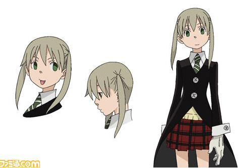

마카 아르반(Maka Albarn)

소울 이터의 두 주인공 중 하나. 이름의 유래는 일어로 '낫'을 뜻하는 '카마'를 뒤집은 것으로 추측된다. 알반이라는 이름은 락 매니아인 작가를 생각하면 블러의 리더 데이먼 알반으로 추정된다. 성우는 애니메이션에서 오미가와 치아키/ 이지현 /로라 베일리. 드라마 CD에서는 타케우치 준코. 팬들에게는 히어로라고 불리고 있다.트윈테일로 묶은 금발인지 짙은 아이보리색인지 애매하지만 굳이 따지자면 애쉬 블론드의 머리카락, 녹색 눈, 사무전 교복에 긴 검은색 자켓 등이 특징. 취미는 책읽기로, 본인도 어렸을 때부터 자주 그림책을 읽어주던 아버지의 영향이라고 생각하는 것 같다. 데스사이즈 중 한 명인 스피리트 알반과, 그의 2대 장인 사이에서 태어난 일종의 혼혈. 외모나 이름을 보면 전혀 믿기지 않지만 '일본계'라고. 부모님이 부모님인지라 데스시티에서 태어나고 자랐다.책 읽는 걸 무척 좋아하지만 그렇다고 모든 방면에서 박식한 건 아니다. 자기가 관심있는 쪽만 파고들 뿐 그렇지 않은 분야는 경우에 따라 일반적 상식으로 여겨지는 것조차 오히려 평범한 학생보다도 이해가 떨어지는 듯. 그 예로 농구 규칙을 전혀 모른다.